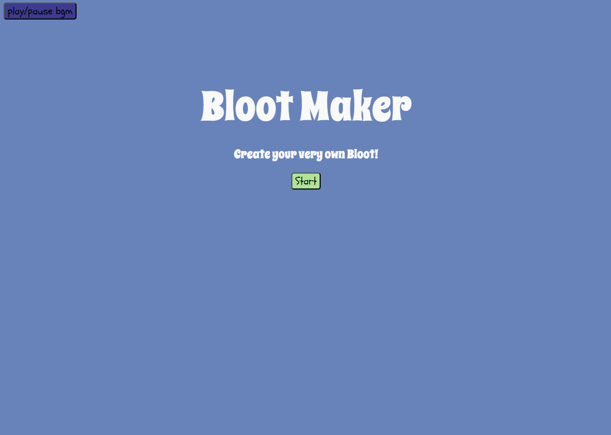
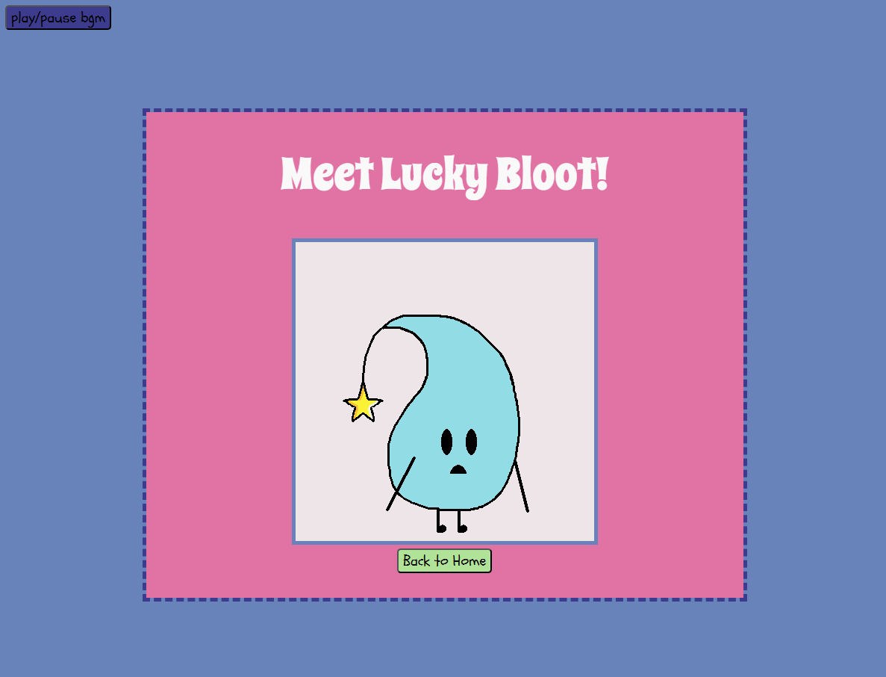
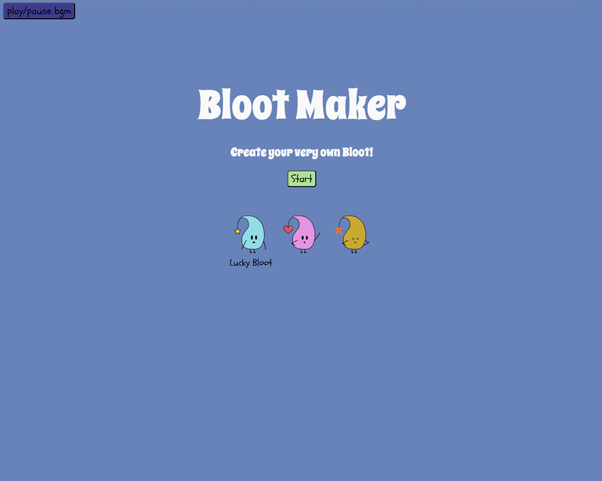
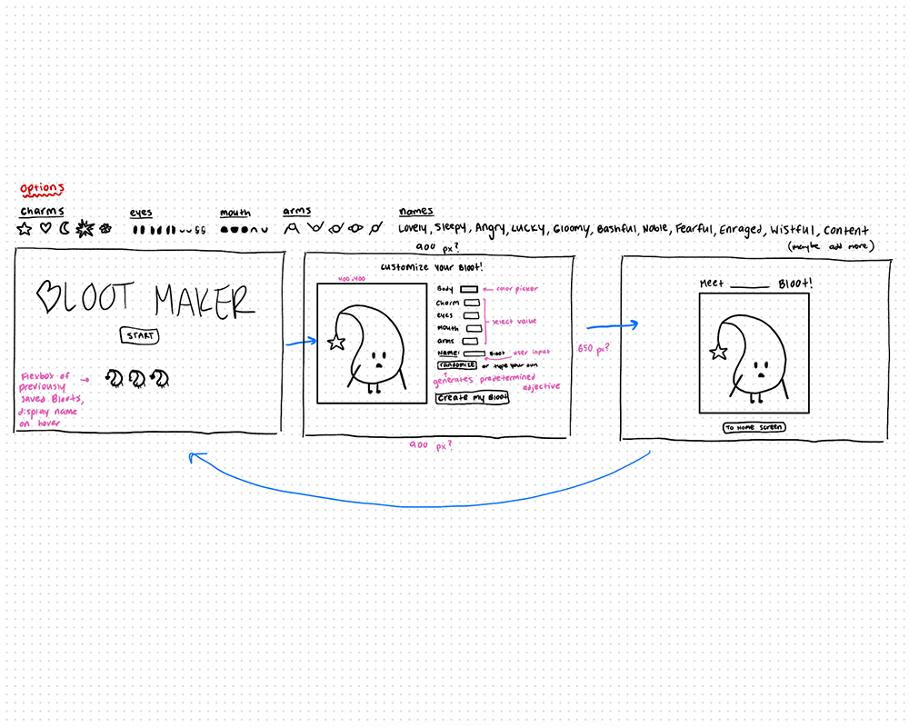

Bloot Maker
December 2025
- HTML
- CSS
- JavaScript
This website displays an avatar creator experience based on an original character named Bloot.
To Website



This website displays an avatar creator experience based on an original character named Bloot.
To WebsiteFor this solo class project, I decided to build upon a character I created my freshman year named Bloot. I aimed to create a fun and lighthearted interactive experience. I began by sketching out pages of the site such as the customization and completed character pages. I determined various characteristics of Bloot that I could use in this experience. I then coded in the bare bones of the website using JavaScript and HTML to implement DOM interactions and page navigation. I created sprites of Bloot's physical features using Aseprite and coded in those assets' display controls based on DOM user input. Then, I introduced a feature that saves the user's created characters to the home page. This was meant to give further meaning to the user's creations post-completion, rather than discarding any of the characters they worked on. After refining the layout of each page, I then determined a color palette and font choice to match the fun experience I hoped to convey. Finally, I included a button to play background music throughout the user's experience using the site, as well as sound effects activated by button clicks.